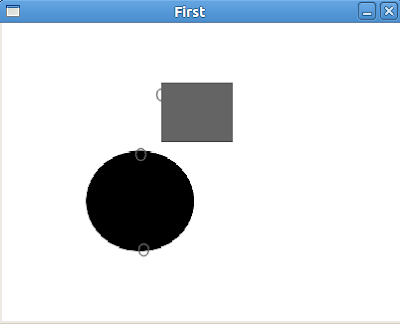

Piksel Takibi, OpenCV, cvCalcOpticalFlowPyrLK, optflow
Iki imaj arasinda, birinci imajda secilen piksellerin ikinci imajda nereye gitmis oldugu, yani piksel eslestirme problemi (image registration) genelde Lukas-Kanade adli matematiksel yontem, ve OpenCV ozelinde CalcOpticalFlowPyrLK cagrisi ile cozuluyor. Alttaki ornekte arka arkaya iki imaj gosteriliyor, ve bu imajlarin ilkinde eslestirilmesini istedigimiz 3 tane pikseli biz rasgele sectik. Bu piksel noktalari sonra bir sonraki imajda buluyoruz, ve onlari da isaretleyerek gosteriyoruz. import cv
seq = [cv.LoadImage("flow%d.png" % (i+1), 0) for i in range(2)]
crit = (cv.CV_TERMCRIT_ITER, 100, 0.1)
crit = (cv.CV_TERMCRIT_EPS, 0, 0.001)
pts = [(142,190), (139,110), (160,60)]
color = (100,100,255)
r = cv.CalcOpticalFlowPyrLK(seq[0], seq[1], None, None,
pts, (100,100), 0, crit, 0)
for pt in pts:
cv.Circle(seq[0], pt, 5, color, 0, cv.CV_AA, 0)
a = cv.CreateImage((400,300), 8, 1)
cv.Resize(seq[0], a, cv.CV_INTER_NN)
cv.ShowImage('First', a)
cv.WaitKey()
cv.DestroyAllWindows()
for pt in r[0]:
cv.Circle(seq[1], (int(pt[0]), int(pt[1])), 5, color, 0, cv.CV_AA, 0)
b = cv.CreateImage((400,300), 8, 1)
cv.Resize(seq[1], b, cv.CV_INTER_NN)
cv.ShowImage('Second', b)
cv.WaitKey()
cv.DestroyAllWindows()
Alternatif bir paket optflow paketi. CImg kutuphanesi kullanilarak yazilmis, once Ubuntu uzerinde apt-get ile libboost-program-options-dev kurulmasi lazim. Sonra program indirilir, ana dizinde "cmake ." isletilir, ve make komutu verilir. Simdi bin altinda cikti gorulecek. Dizin examples altina gidin ve
../bin/extractmotion --image1 complex1.png --image2 complex2.png --algorithm lucaskanade --outprefix out
isletin.


Yukarı